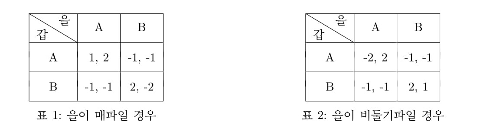
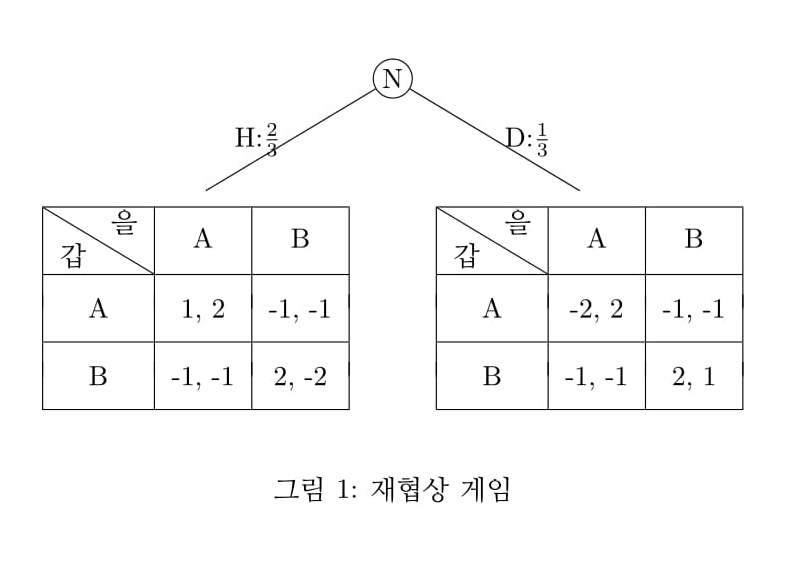
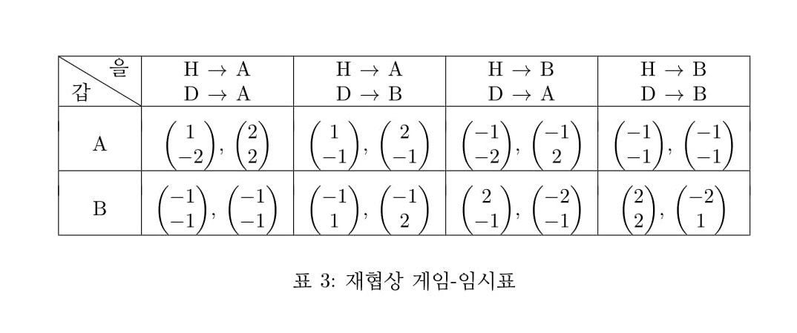
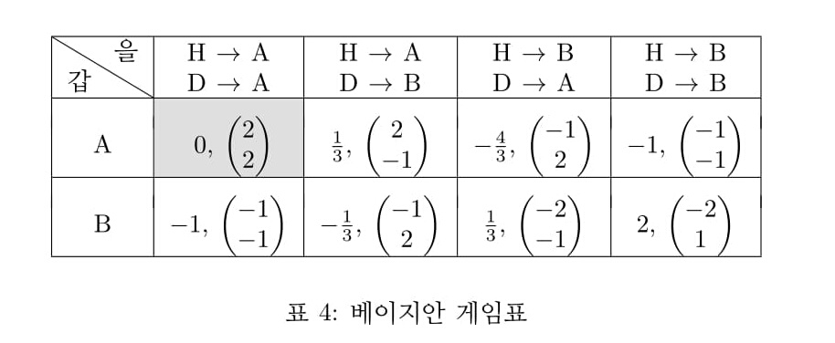

1. 베이지안 게임
베이지안 게임은 상대방의 정보를 모르는 경우를 다루는 게임이다. 나에게 다른 플레이어에게 알려지지 않은 정보가 있다면 이런 경우를 정보의 비대칭성이라 한다. 베이지안 게임은 이런 경우를 다룬다. 양자 모두, 또는 플레이어 모두가 모르는 경우라면 정보의 비대칭성이 없으므로 베이지안 게임이라 하지 않는다.1
2. 불확실성하 재협상 게임
갑국과 을국은 을국의 요구에 따라 무역협정 재협상을 하려고 한다.
갑과 을은 각각 A안과 B안을 준비하고 있다. A안은 을에게 유리하고 B안은 갑에게 유리하다. 그런데 을의 재협상 요구에는 진짜로 강경파의 요구에 따라 재협상을 요구하는 것인지, 아니면 내부의 정치적 의도에 따라 재협상을 요구하는 것인지 불분명하다. 전자일 경우를 H(Hawk:매파) 유형, 후자일 경우를 D(Dove: 비둘기파) 유형이라 하자. 전자일 경우와 후자일 경우의 보수표는 <표 1>, <표 2>와 같다.

을이 매파일 경우 갑 A, 을 A가 내쉬균형이다. A안은 을이 선호하는 안이므로 이때 갑은 1, 을은 2의 보수를 얻는다. 갑과 을의 제안하는 안이 불일치 하면 협상은 깨지고 양자 모두 교역 중단으로 -1의 피해를 본다. 갑 B, 을 B의 경우 B 안은 갑이 선호하는 안이므로 갑 2, 을 -2의 보수를 얻는다.
을이 비둘기파일 경우 갑 B, 을 B가 내쉬균형이다. B안은 을이 선호하는 안이므로 이때 갑은 2, 을은 1의 보수를 얻는다. 갑과 을의 제안하는 안이 불일치 하면 협상은 깨지고 양자 모두 교역 중단으로 -1의 피해를 본다. 갑 A, 을 A의 경우 A 안은 을이 선호하는 안이므로 갑 -2, 을 2의 보수를 얻는다.
갑은 을이 전자일지 후자일지를 모른다. 단지 을이 전자일 확률이 $\frac{2}{3}$, 을이 후자일 확률이 $\frac{1}{3}$임을 알고 있다. 이상을 게임트리로 그리면 <그림 1>과 같다.
갑이 을의 유형을 모르므로 첫 노드를 N(Nature:자연)으로 표현한다.

3. 베이지안 게임에서 전략의 정의
베이지안 게임에서 전략은 유형별로 행동방안을 정하는 것이다. 갑은 유형이 없으므로 행동 방안이 바로 전략이 된다. 을은 두 개의 유형이 있으므로 두 개의 유형별로 행동 방안 경우의 수를 나열한다.
갑의 전략 : {A}, {B}
을의 전략 : {H→A, L→A}, {H→A, L→B}, {H→B, L→A}, {H→B, L→B}
4. 베이지안 게임에서 보수의 정의
우선 임시로 유형별 보수표를 구하면 <표 3>과 같다. <표 3>은 베이지안 게임표가 아니라 베이지안 게임표를 계산하기 쉽게 하기 위해 임시로 구한 표이다.

예로서 갑 A, 을 AA인 경우, 즉 <표 3>의 첫째 셀의 값은 다음과 같이 구한다.
갑의 보수는 갑 A, 을 H 일때 A 선택이므로 <표 1>의 갑 A, 을 A에서 1, 을 D일 때 A 선택이므로 <표 2>의 갑 A, 을 A에서 -2,
이상을 유형별 보수벡터 $\begin{pmatrix} 1 \\ -2 \end{pmatrix}$ 로 표시한다.
을의 보수는 갑 A, 을 H 일때 A 선택이므로 <표 1>의 갑 A, 을 A에서 2, 을 D일 때 A 선택이므로 <표 2>의 갑 A, 을 A에서 2,
이상을 유형별 보수벡터 $\begin{pmatrix} 2 \\ 2 \end{pmatrix}$ 로 표시한다.
베이지안 게임에서 게임의 보수는 갑의 경우 을의 유형을 모르므로 기대값을 구하고 을의 경우는 유형별로 표기한다. 즉 유형을 모르는 측에서는 기대값을 구하고 유형을 아는 자신의 입장에서는 유형별로 보수를 벡터로 표시하는 것이 베이지안 게임에서 보수표이다.
이상을 구하면 <표 4>와 같다.

<표 4>의 갑 A, 을 AA의 보수는 다음과 같이 구한다.
<표 3> 으로부터 갑의 보수는 을이 H 유형일 확률 $\frac{2}{3}$ , 보수 -1, D 유형일 확률 $\frac{1}{3}$ , 보수 2 이므로 갑의 기대 보수는 $ -1 × \frac{2}{3} + 2 × \frac{1}{3} = 0$
을의 보수는 유형별로 표기한다. <표 3>의 값 $\begin{pmatrix} 2 \\ 2 \end{pmatrix}$을 그대로 쓰면 된다.
다른 셀도 같은 방법으로 구한다.
베이지안 내쉬균형은 정의상 모든 유형에 대해 이탈 유인이 없어야 한다. 즉 모든 유형에 대해 보수값이 크거나 같아야 한다. 갑의 경우는 기대보수를 비교하면 되고 을의 경우는 열벡터의 모든 원소가 다른 열벡터보다 크거나 같아야 한다.
이 게임에서 베이지안 내쉬균형은 <표 4>에서 회색으로 칠해진 부분으로 {갑 A, 을 H->A, D->A}이다. 즉 갑은 A 안을 선택하고 을은 H 유형일 때 A, D 유형일 때도 A안을 선택하는 것이 최선이다.
갑은 을이 강경파일 가능성이 크다고 간주하고 있으므로 을과의 협상 타결을 위해 A안을 선택하는 것이 최선이다. 을의 전략은 일종의 기만전술이다. 을은 H유형일 경우 내쉬균형인 A안을 선택한다. 그런데 D 유형이라면 B가 내쉬균형으로 최선이지만 갑이 을 자신을 강경파로 오판하고 있으므로 을은 D유형일 때도 A안을 제시하는 것이다.
5. 확률을 모르는 경우
갑이 을의 유형의 확률을 모르는 경우를 고려해보자.
을이 H 유형일 확률을 $p$, D 유형일 확률을 $1 − p$ 라 하자. <표 4>에서 바뀌는 것은 갑의 보수뿐이다. 을의 보수는 확률이 필요하지 않으므로 그대로이다.
갑이 A를 선택하는 경우 을은 AA가 최선이다.
을이 AA일 때 갑의 A선택시 기대보수는 <표3>으로부터 $1×p+−2×(1−p)=3p−2$
을이 AA일 때 갑의 B선택시 기대보수는 <표3>으로부터 $−1×p+−1×(1−p)=−1$
$3p−2>−1 $ 에서 $p>\frac{1}{3}$ 이면 을이 AA일 때 갑은 A를 선택한다.
갑이 B를선택하는 경우 을은 AB가 최선이다.
을이 AB일 때 갑의 A선택시 기대보수는 <표3>으로부터 $1×p+−1×(1−p)=2p−1$
을이 AB일 때 갑의 B선택시 기대보수는 <표3>으로부터 $−1×p+1×(1−p)=1−2p$
$2p−1>1−2p$ 에서 $p>\frac{1}{2}$ 이면 을이 AB일 때 갑은 A를 선택한다.
이상으로부터 $p>\frac{1}{2}$ 이면 {갑 A, 을 H->A, D->A}가 베이지안 내쉬균형이다.
$ \frac{1}{3}< p<\frac{1}{2}$ 이면 {갑 A, 을 H->A, D->A}, {갑 B, 을 H->A, D->B} 가 베이지안 내쉬균형이다.
$p<\frac{1}{3}$ 이면 {갑 B, 을 H->A, D->B} 가 베이지안 내쉬균형이다.2
결론적으로 갑이 을이 매파일 가능성을 어느 정도로 확신하는가의 여부가 최선의 행동에 영향을 미침을 알 수 있다.
갑은 을이 매파일 가능성이 높다면 A안을 제시하는 것이 최선이다. 반면 을이 비둘기파일 가능성이 높다면 B안을 제시하는 것이 최선이다.
을은 갑이 자신을 매파로 판단한다면 H->A, D->A의 통합전략(기만전술)으로 나간다. 을은 갑이 자신을 비둘기파로 판단한다면 H->A, D->B의 분리전략(솔직전술)으로 나간다.
이와 같은 일은 현실에서도 흔히 볼 수 있다. 교활한 장사꾼은 상대방의 눈치를 보고 저품질 상품(또는 짝퉁)을 고품질 상품(진품)이라고 속여 팔 것이다. 군사작전시 적에게 거짓 정보를 흘려 상대방의 믿음을 조작함으로써 아군에게 유리한 환경을 조성할 수도 있다.3
한 기업이 경쟁사 몰래 신기술 제품을 개발하면서도 안 그런척 할 수 있다.
갑국은 핵무기 개발을 완료하지 않았으면서도 을국의 이에 대한 정보가 부족하다는 점을 이용하여 을국과의 협상에 자신에게 유리한 주장을 관철시키려 할 수 있다. 물론 이 모든 경우 상대방이 정확한 정보를 갖고 있다고 판단되면 솔직전술로 나아간다.
상대방의 나에 대한 정보력에 따라 나의 대응방안이 달라지는 것이다.
1.불확실성이 유형별 확률로 주어진 경우 플레이어 모두의 기대보수를 구한다. 기대보수를 비교해서 최선의 전략을 구하므로 이때 균형의 개념은 내쉬균형이다.
2. 다른 셀의 갑의 기대보수는 내쉬균형에 영향을 미치지 못하므로 굳이 계산할 필요가 없다.
3. 이 부분은 사실 신호게임과 관련성이 크다.